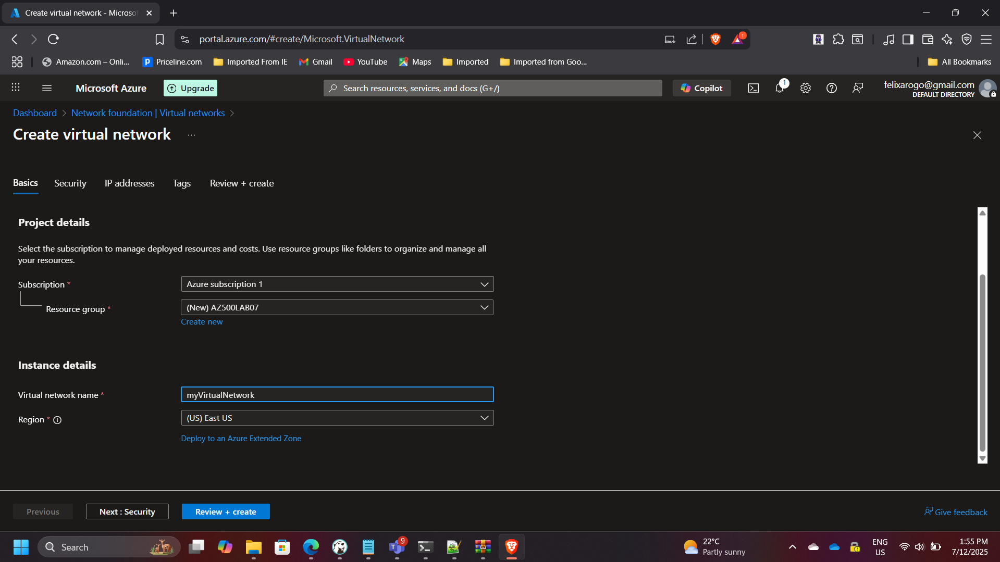

Implementing Network Security with Azure NSGs and ASGs
Implementing Network Security with Azure NSGs and ASGs
Timeline: July 2025
Role: Cloud Security Engineer
Skills: Azure Networking, Network Security Groups (NSG), Application Security Groups (ASG), RDP Access Control, Network Segmentation
Project Summary
This project focused on designing and implementing secure network segmentation in Microsoft Azure using Network Security Groups (NSGs) and Application Security Groups (ASGs).
The goal was to create a tiered virtual network that separates web and management workloads, enforcing least-privilege access through layered security rules.
By leveraging ASGs, security rules could be applied dynamically to VM groups without managing individual IPs — achieving a scalable and easily maintainable network security model.
Objectives
- Design a virtual network with distinct web and management tiers.
- Configure ASGs to logically group VMs based on their roles.
- Apply NSGs for inbound and outbound traffic control.
- Enforce RDP access restrictions from trusted IPs only.
- Validate communication paths between web and management layers.
Implementation & Highlights
1. Virtual Network Setup
- Created a single virtual network (VNet) with subnets for the web and management tiers.
- Defined address spaces to allow for future scalability and segmentation.

2. Application Security Groups (ASGs)
- Configured two ASGs:
WebServers-ASGfor frontend VMsMgmtServers-ASGfor backend administrative VMs
- ASGs simplified rule management by grouping network interfaces logically.


3. Network Security Group (NSG) Rules
- Created an NSG and associated it with the subnets.
- Defined inbound rules to:
- Allow HTTP/HTTPS traffic to web servers.
- Permit RDP (TCP 3389) only from trusted IP ranges for management servers.
- Outbound rules were left open for updates and monitoring agent communications.

4. VM Deployment and Association
- Deployed two virtual machines:
myVMWeb— attached to WebServers-ASGmyVMMgmt— attached to MgmtServers-ASG
- Each VM inherited security policies automatically through ASG membership.


5. Validation and Testing
- Verified connectivity:
- Web VM accessible over HTTP/HTTPS.
- Management VM accessible only via authorized RDP connections.
- Cross-tier communication limited per NSG rules.
- Confirmed expected traffic flow through Network Watcher and connection troubleshooting.

Results & Impact
- Implemented segmented, role-based network control using NSGs and ASGs.
- Achieved fine-grained access management without manual IP rule updates.
- Enhanced environment security by restricting management port exposure.
- Simplified ongoing administration with logical VM grouping.
Tools & Services Used
- Azure Virtual Network & Subnets – Foundational network segmentation
- Application Security Groups (ASG) – Logical VM grouping
- Network Security Groups (NSG) – Inbound/outbound traffic filtering
- RDP & HTTP/HTTPS Rules – Controlled access management
- Azure Network Watcher – Validation and traffic monitoring
Outcome
The project successfully delivered a secure, scalable, and policy-driven network design using Azure-native capabilities.
It demonstrated expertise in Azure network security architecture, segmentation, and access control best practices, contributing to a defense-in-depth strategy aligned with the Microsoft Cloud Security Benchmark.